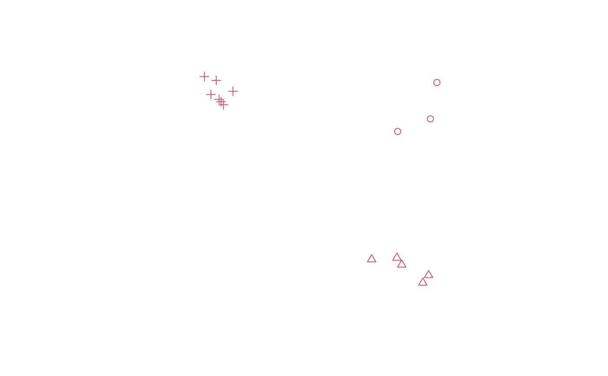
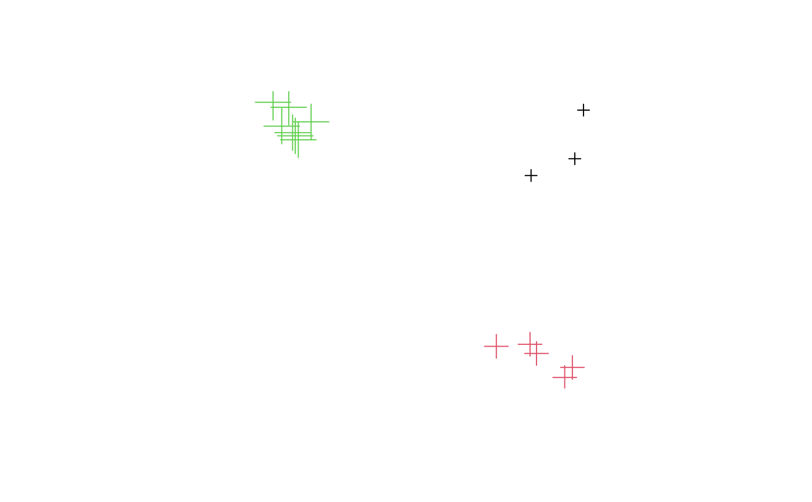

SpatialMultiPoints.Rdcreate objects of class SpatialMultiPoints-class or
SpatialMultiPointsDataFrame-class from
coordinates, and from coordinates and data.frames
SpatialMultiPoints(coords, proj4string=CRS(as.character(NA)), bbox = NULL)
SpatialMultiPointsDataFrame(coords, data,
proj4string = CRS(as.character(NA)), match.ID, bbox = NULL)list with in each element a numeric matrix or data.frame with coordinates (each row representing a point); in case of SpatialMultiPointsDataFrame an object of class SpatialMultiPoints-class is also allowed
projection string of class CRS-class
bounding box matrix, usually NULL and constructed from the data, but may be passed through for coercion purposes if clearly needed
object of class data.frame; the number of rows in data
should equal the number of points in the coords object
logical or character; if missing, and coords and data both have
row names, and their order does not correspond, matching is done by these
row names and a warning is issued; this warning can be suppressed by setting
match.ID to TRUE.
If TRUE AND coords has non-automatic
rownames (i.e., coerced to a matrix by as.matrix,
dimnames(coords)[[1]] is not NULL), AND data has
row.names (i.e. is a data.frame), then the SpatialMultiPointsDataFrame
object is formed by matching the row names of both components, leaving
the order of the coordinates in tact. Checks are done to see whether
both row names are sufficiently unique, and all data are matched.
If FALSE, coordinates and data are simply "glued" together, ignoring row names. If
character: indicates the column in data with coordinates IDs
to use for matching records. See examples below.
SpatialMultiPoints returns an object of class SpatialMultiPoints;
SpatialMultiPointsDataFrame returns an object of class SpatialMultiPointsDataFrame;
cl1 = cbind(rnorm(3, 10), rnorm(3, 10))
cl2 = cbind(rnorm(5, 10), rnorm(5, 0))
cl3 = cbind(rnorm(7, 0), rnorm(7, 10))
mp = SpatialMultiPoints(list(cl1, cl2, cl3))
mpx = rbind(mp, mp) # rbind method
plot(mp, col = 2, cex = 1, pch = 1:3)

mp
#> SpatialMultiPoints:
#> [[1]]
#> [,1] [,2]
#> [1,] 10.990458 11.037635
#> [2,] 9.524533 9.806764
#> [3,] 11.372238 8.054232
#>
#> [[2]]
#> [,1] [,2]
#> [1,] 10.766155 -0.8376508
#> [2,] 9.756940 -1.0049490
#> [3,] 9.317356 -1.6903584
#> [4,] 10.365844 -0.7211439
#> [5,] 10.676177 -0.5866481
#>
#> [[3]]
#> [,1] [,2]
#> [1,] -0.028602569 10.477307
#> [2,] -1.310973740 10.289963
#> [3,] 0.006060172 9.561015
#> [4,] 1.113566608 9.271680
#> [5,] 1.332774427 11.163527
#> [6,] -0.132455469 10.409158
#> [7,] -0.305739028 9.775527
#>
#> Coordinate Reference System (CRS) arguments: NA
mp[1:2]
#> SpatialMultiPoints:
#> [[1]]
#> [,1] [,2]
#> [1,] 10.990458 11.037635
#> [2,] 9.524533 9.806764
#> [3,] 11.372238 8.054232
#>
#> [[2]]
#> [,1] [,2]
#> [1,] 10.766155 -0.8376508
#> [2,] 9.756940 -1.0049490
#> [3,] 9.317356 -1.6903584
#> [4,] 10.365844 -0.7211439
#> [5,] 10.676177 -0.5866481
#>
#> Coordinate Reference System (CRS) arguments: NA
print(mp, asWKT=TRUE, digits=3)
#> SpatialMultiPoints:
#> geometry
#> 1 MULTIPOINT (11 11,9.52 9.81,11.4 8.05)
#> 2 MULTIPOINT (10.8 -0.838,9.76 -1,9.32 -1.69,10.4 -0.721,10.7 -0.587)
#> 3 MULTIPOINT (-0.0286 10.5,-1.31 10.3,0.00606 9.56,1.11 9.27,1.33 11.2,-0.132 10.4,-0.306 9.78)
#> Coordinate Reference System (CRS) arguments: NA
mpdf = SpatialMultiPointsDataFrame(list(cl1, cl2, cl3), data.frame(a = 1:3))
mpdf
#> coordinates a
#> 1 (10.99046, 11.03763) 1
#> 1.1 (9.524533, 9.806764) 1
#> 1.2 (11.37224, 8.054232) 1
#> 2 (10.76616, -0.8376508) 2
#> 2.1 (9.75694, -1.004949) 2
#> 2.2 (9.317356, -1.690358) 2
#> 2.3 (10.36584, -0.7211439) 2
#> 2.4 (10.67618, -0.5866481) 2
#> 3 (-0.02860257, 10.47731) 3
#> 3.1 (-1.310974, 10.28996) 3
#> 3.2 (0.006060172, 9.561015) 3
#> 3.3 (1.113567, 9.27168) 3
#> 3.4 (1.332774, 11.16353) 3
#> 3.5 (-0.1324555, 10.40916) 3
#> 3.6 (-0.305739, 9.775527) 3
mpdfx = rbind(mpdf, mpdf) # rbind method
plot(mpdf, col = mpdf$a, cex = 1:3)

as(mpdf, "data.frame")
#> X1 X2 index a
#> X1 10.990458223 11.0376347 1 1
#> X1.1 9.524533289 9.8067644 1 1
#> X1.2 11.372237898 8.0542317 1 1
#> X2 10.766155367 -0.8376508 2 2
#> X2.1 9.756940303 -1.0049490 2 2
#> X2.2 9.317356098 -1.6903584 2 2
#> X2.3 10.365844013 -0.7211439 2 2
#> X2.4 10.676177234 -0.5866481 2 2
#> X3 -0.028602569 10.4773073 3 3
#> X3.1 -1.310973740 10.2899630 3 3
#> X3.2 0.006060172 9.5610153 3 3
#> X3.3 1.113566608 9.2716802 3 3
#> X3.4 1.332774427 11.1635273 3 3
#> X3.5 -0.132455469 10.4091582 3 3
#> X3.6 -0.305739028 9.7755275 3 3
mpdf[1:2,]
#> coordinates a
#> 1 (10.99046, 11.03763) 1
#> 1.1 (9.524533, 9.806764) 1
#> 1.2 (11.37224, 8.054232) 1
#> 2 (10.76616, -0.8376508) 2
#> 2.1 (9.75694, -1.004949) 2
#> 2.2 (9.317356, -1.690358) 2
#> 2.3 (10.36584, -0.7211439) 2
#> 2.4 (10.67618, -0.5866481) 2